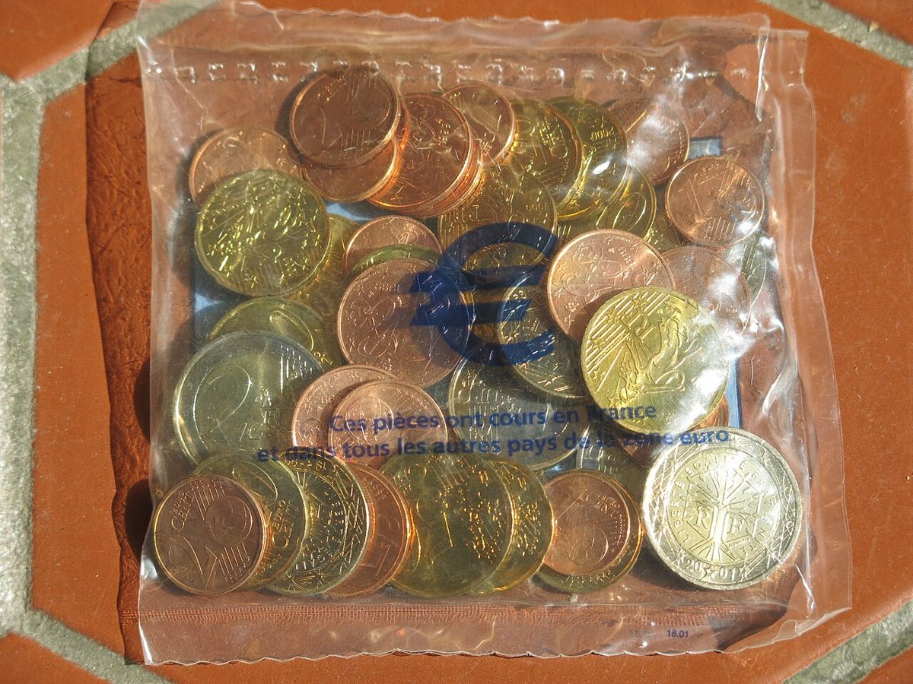

Sejarah & fakta: Hampir 25 tahun uang euro, operasi ganti uang tunai terbesar di dunia, dan kini bersiap ke digital euroHistory & facts: Nearly 25 years of euro cash, the world's biggest currency changeover, and now preparing for the digital euro
Pada 1 Januari 2002, 308 juta orang di 12 negara Eropa bangun dengan uang baru di dompet. ECB menyebutnya pergantian mata uang terbesar yang pernah ada. Menjelang ulang tahun ke-25 uang kertas dan koin euro, ini fakta-fakta menarik soal bagaimana operasi raksasa itu dijalankan, dan apa hubungannya dengan rencana digital euro.On 1 January 2002, 308 million people in 12 European countries woke up with new money in their wallets. The ECB calls it the largest currency changeover ever. Ahead of the 25th anniversary of euro banknotes and coins, here are interesting facts about how that giant operation was run, and how it relates to the digital euro plan.

Poin utamaKey points
- Euro diluncurkan 1 Januari 1999, tetapi tiga tahun pertama hanya berupa "uang tak terlihat" untuk akuntansi dan pembayaran elektronik. Uang tunainya baru beredar 1 Januari 2002 (ECB).
- Pergantian 2002 melibatkan 12 negara dengan total penduduk 308 juta orang; ECB menyebutnya pergantian mata uang terbesar di dunia.
- Sebanyak 14,89 miliar lembar uang kertas senilai sekitar €633 miliar dicetak di 15 percetakan. Jika dijajarkan, panjangnya cukup untuk ke Bulan dan kembali dua setengah kali (ECB).
- Sekitar 52 miliar koin senilai €15,75 miliar dibuat oleh 16 percetakan uang Eropa, memakai 250.000 ton logam.
- Kini euro adalah alat pembayaran sah di 21 dari 27 negara Uni Eropa (Bulgaria bergabung 2026), dipakai sekitar 358 juta orang. ECB menyiapkan pilot digital euro mulai semester II 2027.
- The euro was launched on 1 January 1999, but for its first three years it was an "invisible currency" used only for accounting and electronic payments. Cash only entered circulation on 1 January 2002 (ECB).
- The 2002 changeover involved 12 countries with a total population of 308 million; the ECB calls it the world's largest ever monetary changeover.
- 14.89 billion banknotes worth about €633 billion were printed at 15 printing works. Placed end to end, they would reach the moon and back two and a half times (ECB).
- Around 52 billion coins worth €15.75 billion were made by 16 European mints, using 250,000 tonnes of metal.
- Today the euro is legal tender in 21 of the 27 EU member states (Bulgaria joined in 2026), used by about 358 million people. The ECB is preparing a digital euro pilot from the second half of 2027.
Euro tidak lahir sebagai uang tunai. Menurut Bank Sentral Eropa (ECB), euro diluncurkan pada 1 Januari 1999 dan saat itu menjadi mata uang lebih dari 300 juta orang di Eropa. Namun selama tiga tahun pertama, euro adalah mata uang "tak terlihat" yang hanya dipakai untuk keperluan akuntansi, misalnya pembayaran elektronik. Uang kertas dan koin euro baru diperkenalkan pada 1 Januari 2002, menggantikan uang nasional seperti franc Belgia dan Deutsche Mark dengan kurs konversi tetap.
Skala operasinya luar biasa. ECB mencatat, pada 1 Januari 2002 uang kertas dan koin euro diperkenalkan di 12 negara dengan total penduduk 308 juta orang, dan menyebutnya "the world's largest ever monetary changeover" (pergantian mata uang terbesar yang pernah ada di dunia). Produksi uang kertas sudah dimulai sejak Juli 1999 di 15 percetakan uang di seluruh Uni Eropa. Hingga 1 Januari 2002, tercetak 14,89 miliar lembar dengan nilai nominal sekitar €633 miliar. Menurut ECB, jika dijajarkan ujung ke ujung, uang kertas itu cukup untuk mencapai Bulan dan kembali dua setengah kali.
Untuk koin, sekitar 52 miliar keping senilai €15,75 miliar diproduksi oleh 16 percetakan uang Eropa dengan 250.000 ton logam. Dalam pidato tahun 2003, pejabat ECB menggambarkan bahwa dibutuhkan sekitar 10.000 truk untuk mengangkut seluruh koin itu. Pecahan yang paling banyak dicetak adalah €20 (3,406 miliar lembar), sedangkan €200 paling sedikit (223 juta lembar).
Kuncinya adalah distribusi lebih awal (frontloading). Uang euro sudah dikirim ke bank dan peritel sejak September 2001. Menurut ECB, sebelum 1 Januari 2002 sekitar 6,4 miliar lembar uang kertas senilai sekitar €133 miliar dan 37,5 miliar koin sudah didistribusikan lebih dulu. Warga juga bisa membeli "starter kit", kantong berisi koin euro, dan 150 juta starter kit terjual dalam dua minggu.
Hasilnya cepat. Pada 3 Januari 2002, 96% mesin ATM di kawasan euro sudah mengeluarkan uang euro. Seminggu setelah peluncuran, lebih dari separuh transaksi tunai sudah memakai euro. Setelah masa peredaran ganda yang di beberapa negara berlangsung hingga dua bulan, euro menjadi satu-satunya alat pembayaran sah di kawasan euro pada 1 Maret 2002. Saat itu lebih dari 6 miliar lembar uang kertas dan hampir 30 miliar koin nasional sudah ditarik.
Fakta kecil yang menarik: kurs konversi tetap 1 euro = 1,95583 Deutsche Mark, dan angka yang sama persis berlaku untuk lev Bulgaria (1 euro = 1,95583 lev) saat Bulgaria masuk euro pada 2026. Sementara 1 euro setara 1.936,27 lira Italia. Saat ini, menurut ECB, uang euro adalah alat pembayaran sah di 21 dari 27 negara anggota Uni Eropa dan dipakai sekitar 358 juta orang.
Babak berikutnya adalah digital. Dalam pidato di Parlemen Eropa pada 10 November 2026, anggota Dewan Eksekutif ECB Piero Cipollone mengatakan pilot digital euro akan dimulai pada semester II 2027 dengan versi beta tanpa status alat pembayaran sah, dan tanggal penerbitan pertama baru bisa ditetapkan setelah regulasinya disahkan. ECB juga sedang mendesain ulang uang kertas euro; survei desainnya diikuti hampir 10 juta responden, dan pecahan pertama seri baru diperkirakan beredar awal 2030-an. Digital euro berbeda dari crypto seperti Bitcoin: ia akan diterbitkan dan dijamin bank sentral, bukan jaringan terdesentralisasi.
The euro was not born as cash. According to the European Central Bank (ECB), the euro was launched on 1 January 1999, when it became the currency of more than 300 million people in Europe. But for the first three years it was an "invisible" currency, used only for accounting purposes such as electronic payments. Euro banknotes and coins were only introduced on 1 January 2002, replacing national currencies such as the Belgian franc and the Deutsche Mark at fixed conversion rates.
The scale of the operation was extraordinary. The ECB notes that on 1 January 2002 euro banknotes and coins were introduced in 12 countries with a total population of 308 million, calling it "the world's largest ever monetary changeover". Banknote production had started in July 1999 at 15 printing works across the EU. By 1 January 2002, 14.89 billion banknotes had been printed with a total face value of about €633 billion. According to the ECB, placed end to end, those banknotes would have reached the moon and back two and a half times.
For coins, around 52 billion pieces worth €15.75 billion were produced by 16 European mints using 250,000 tonnes of metal. In a 2003 speech, an ECB official illustrated that about 10,000 trucks would be needed to transport all those coins. The most-printed denomination was the €20 (3.406 billion notes), while the €200 was the least (223 million notes).
The key was early distribution (frontloading). Euro cash was delivered to banks and retailers from September 2001. According to the ECB, before 1 January 2002 about 6.4 billion banknotes worth some €133 billion and 37.5 billion coins had already been frontloaded. Citizens could also buy "starter kits", bags of euro coins, and 150 million starter kits were sold in two weeks.
The results came fast. By 3 January 2002, 96% of cash dispensers in the euro area were issuing euro banknotes. One week after the launch, more than half of all cash transactions were in euro. After a dual circulation period that lasted up to two months in some countries, the euro became the sole legal tender in the euro area on 1 March 2002. By then, more than 6 billion banknotes and close to 30 billion national coins had been withdrawn.
A small but interesting fact: the fixed conversion rate was 1 euro = 1.95583 Deutsche Mark, and exactly the same figure applies to the Bulgarian lev (1 euro = 1.95583 lev) when Bulgaria joined the euro in 2026. Meanwhile, 1 euro equals 1,936.27 Italian lire. Today, according to the ECB, euro cash is legal tender in 21 of the 27 EU member states and used by about 358 million people.
The next chapter is digital. In a speech at the European Parliament on 10 November 2026, ECB Executive Board member Piero Cipollone said the digital euro pilot will start in the second half of 2027 with a beta version without legal tender status, and that the first issuance date can only be set after the regulation is adopted. The ECB is also redesigning euro banknotes; its design survey drew almost 10 million responses, and the first denominations of the new series are expected to circulate in the early 2030s. The digital euro differs from crypto such as Bitcoin: it would be issued and backed by the central bank, not a decentralized network.
Kenapa pentingWhy it matters
Pergantian euro 2002 menunjukkan bahwa uang pada dasarnya adalah kesepakatan dan infrastruktur: mencetak, mendistribusikan, dan membuat orang percaya. Memahami sejarah ini membantu melihat konteks perdebatan masa kini soal digital euro, stablecoin, dan crypto, yang semuanya bersaing menjadi bentuk uang berikutnya.The 2002 euro changeover shows that money is fundamentally agreement and infrastructure: printing, distributing and getting people to trust it. Understanding this history helps put today's debates about the digital euro, stablecoins and crypto into context, as they all compete to become the next form of money.
Fakta cepatQuick facts
- 1 Januari 1999: euro lahir sebagai uang elektronik/akuntansi di 11 negara pendiri.
- 1 Januari 2002: uang tunai euro beredar di 12 negara (Yunani masuk euro pada 2001).
- 1 Maret 2002: euro menjadi satu-satunya alat pembayaran sah di kawasan euro.
- 1 Januari 2026: Bulgaria menjadi anggota ke-21 kawasan euro.
- Semester II 2027: rencana pilot digital euro (versi beta, belum alat pembayaran sah).
- 1 January 1999: the euro is born as electronic/accounting money in 11 founding countries.
- 1 January 2002: euro cash enters circulation in 12 countries (Greece joined the euro in 2001).
- 1 March 2002: the euro becomes the sole legal tender in the euro area.
- 1 January 2026: Bulgaria becomes the 21st euro area member.
- Second half of 2027: planned digital euro pilot (beta version, not yet legal tender).
Bagian sejarah di atas mengikuti data resmi ECB. Perbandingan digital euro dengan crypto adalah penjelasan umum; desain final digital euro masih menunggu regulasi Uni Eropa.The history above follows official ECB data. The comparison between the digital euro and crypto is a general explanation; the digital euro's final design still awaits EU legislation.
FotoPhotos
Foto: starter kit koin euro Prancis, Januari 2002 (Tangopaso, domain publik); gedung ECB dan skyline Frankfurt (DXR, CC BY-SA 4.0). Via Wikimedia Commons.Photos: French euro coin starter kit, January 2002 (Tangopaso, public domain); ECB building and Frankfurt skyline (DXR, CC BY-SA 4.0). Via Wikimedia Commons.
SumberSources
- ECB: Initial changeover (2002)
- ECB: Update on the euro cash changeover (25 Jan 2002)
- ECB: The changeover to the euro currency (pidato 13 Nov 2003)
- ECB: Our money (anggota kawasan euro dan kurs konversi tetap)
- ECB: Bulgaria introduces the euro (1 Jan 2026)
- ECB: Cash and the digital euro, Piero Cipollone (10 Nov 2026)
Ikuti COIN BRO diFollow COIN BRO on Telegram
Dapatkan berita seperti ini lebih cepat di channel kami. Gratis.Get news like this faster on our channel. Free.
Bukan saran finansial. Artikel ini adalah informasi dan edukasi, bukan ajakan membeli atau menjual aset apa pun. Aset kripto berisiko tinggi. Fakta mengikuti sumber yang tercantum; bagian berlabel interpretasi adalah pendapat, bukan fakta. Menemukan kesalahan? Lihat kebijakan koreksi.Not financial advice. This article is information and education, not a solicitation to buy or sell any asset. Crypto assets are high risk. Facts follow the listed sources; sections labeled interpretation are opinion, not fact. Found an error? See our corrections policy.